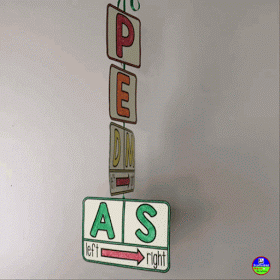

The order of operations is a set of rules that determines the sequence in which calculations are performed in a mathematical expression.
The acronym PEMDAS is often used to remember the order of operations:
Let's look at some examples to understand the order of operations better:
| Example | Solution | Steps |
|---|---|---|
| 2 + 3 × 4 | 14 | 3 × 4 = 12
12 + 2 = 14 |
| (2 + 3) × 4 | 20 | 2 + 3 = 5 (we do parenthesis first)
5 × 4 = 20 |
| 2 + 3 × 4 - 5 | 9 | 3 × 4 = 12
2 + 12 = 14 14 - 5 = 9 |
| 2 + 3 × 4 - 5 ÷ 5 | 13 | 3 × 4 = 12.
2 + 12 - 5 / 5. Division comes next. -5 ÷ 5 is -1. We now have 2 + 12 - 1. We then add 2 + 12 which is 14. Last step is to do 14 - 1 which is 13. |
| 23 + 8 - 2 + 4 | 18 | First step here is exponent. 2 to the 3rd power is 2 × 2 × 2 which equals 8.
Next, we perform addition. 8 + 8 is 16 . We then get 16 - 2 + 4. Subtraction next. 16 - 2 = 14. Last step: 14 + 4 = 18 |
Now it's your turn! Try solving the following problems using the order of operations:
Check your answers below:
Explanations:
Test your knowledge of the order of operations with this quiz!